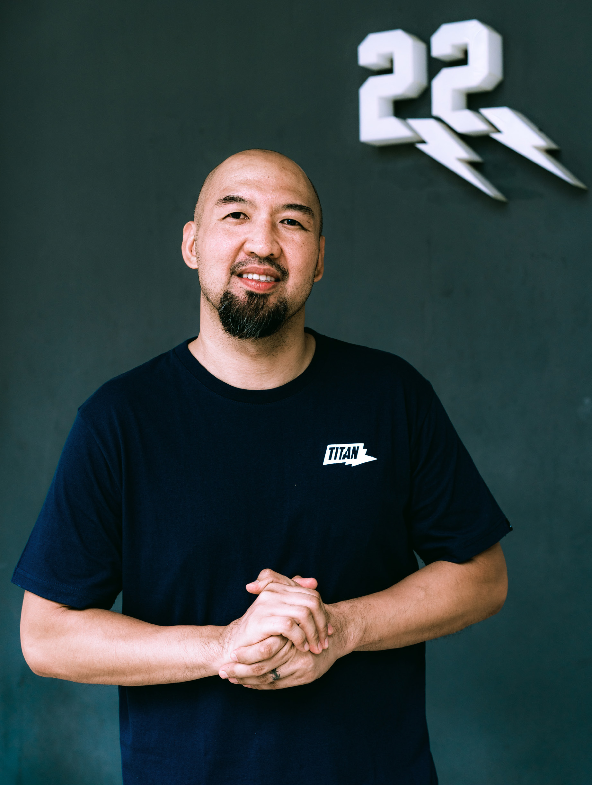
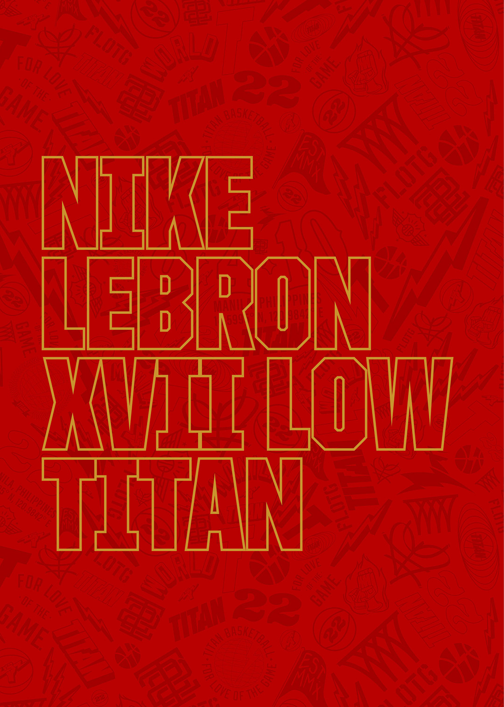
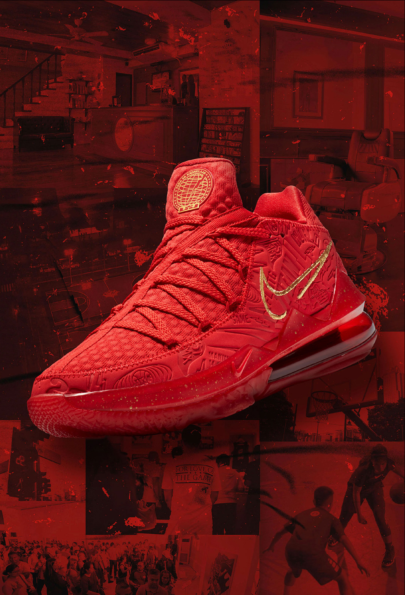

TITAN - founded in 2010 - is a product and an expression of the Filipino’s fabled love for basketball. The country’s undeniable fascination for the game – both religious and fanatical – is legendary the world over.
TITAN was born of this love, is shaped by its culture and strives to take that relationship to greater heights. The brand represents a home for basketball, a limitless haven to play the game, to experience the passion that stokes its flames and where the greatest stories can be told. A country’s unique love for basketball gave birth to a dream – in its essence, the Filipino love for the game itself is built on dreams.
TITAN is that dream come to life, meant to deepen the relationship of a nation to a beloved sport, meant to explore where that dream can take us, but also where we can take the dream.
From our origins, throughout the journey, always for love of the game.
This is a story - of a brand, of the country that birthed it, of the community that embraced it and the love they share for the game.
From Manila, to the World.
Levon Rondina
CO-FOUNDER, CHIEF BRAND OFFICER
“Honestly, I don’t think there was. Personally, I cannot remember that there was, even an ounce of doubt.”
MORE THAN A GAME. While there were many challenges, many unknowns, many uncertainties that came with giving up everything to go double-down on a never-before-attempted start-up, it was the knowledge – that to Filipinos, basketball is more than just another sport – that inspired the founders of TITAN to create a home for the truest fans of the game.
In 2010, Levon Rondina was sitting in an office barely big enough for him and the three other pioneer employees of TITAN. It was a groundbreaking task: a single-category store dedicated solely to basketball, for Filipino basketball fans. In the beginning, the founders had only but each other to mount office furniture, to place orders, to envision and eventually create the store itself. Now Chief Brand Officer, Levon remembers his very first task as soon as TITAN opened: be its first Store Manager.
A little over a month after its doors opened, the spark of an idea actually ignited. Literally. A vintage barber’s chair overheated in the middle of the night, caught fire and almost burned the whole store, the whole dream, to the ground. “It was a sad sight but we went in as soon as the smoke cleared to clean the whole space covered in soot ourselves and opened a few days after like nothing happened.”
Ten years later, TITAN has come farther and further than the founders initially planned. But the dream lives on: to serve the basketball community the world over, and introduce to them what the famous Filipino Love for the Game has given birth to.

Jeffrey Cariaso
CO-FOUNDER, PBA LEGEND
“What will remain true about the brand is our goal to remain the innovators and authenticators of the game.”
WHILE THERE ARE A NUMBER OF THINGS that stand out about Titan as a basketball retailer, the most definable aspect of the brand that was built FLOTG can be seen through the heart and hands of Jeffrey “The Jet” Cariaso.
As one of TITAN’s co-founders, Coach Jeff is the driving force behind the brand’s various grassroots programs and initiatives such as the Titan Basketball Academy, SLAM Summer Hoops Camp, Titan Summer Jam, and the Deer Valley Titans––all of which were conceived for the sole purpose of bringing Philippine basketball to greater heights by playing the game the right way.
Through his experiences as a player and Head Coach of the Alaska Aces, everything Coach Jeff teaches has a purpose, ready to be passed on to the next generation of ballers and leaders of the game. “The values I use to guide and lead at TITAN are the same values I use at Alaska. A hard work ethic and passion are the basics. What you hold each other more accountable to are discipline, honesty, integrity, and trust. Then, you bring it all together and focus on building chemistry and relationships.”
Ten years into the TITAN story, we learn that there’s more to basketball than just the game. It matters how you play it.
“We are more than just a brick and mortar brand. We want to tell stories, create an awesome experience when you come to us, and we want to help and support the future of Philippine basketball.”
Nikko Ramos
BRAND CONNECTIONS DIRECTOR
“A part of me still feels like a fan, like an admirer of TITAN and this group of founders who built this community, this brand, this movement, from scratch.”
NIKKO RAMOS UNDERSTANDS THE IMPORTANCE OF STORYTELLING. As a fan of the brand first, it’s these stories that ultimately nurtured his experiences with TITAN, paving the road to where he is now, the Director of Brand Connections. “Every day, I try to find new and effective ways to connect to our community, share with them the knowledge we have access to, and, more importantly, tell them about TITAN,” shares Nikko.
Ten years in, TITAN finds itself in the midst of a global network that share its Love of the Game. From personalities-turned-family like Jacques Slade, to working with global brands like atmos, and releasing not one, but now two basketball shoes with LeBron James himself, the brand has gone where no other Filipino brand has gone before.
“Doing big things, global things, incredibly impressive things, with community in mind and the game at heart,” Nikko says of the brand, proudly. “The faithfulness we have to the best, purest parts of the game is hardwired into our DNA. No matter what heights we reach, I’m confident that we will remain true to representing the best of the game
Allyn Martin
BRAND DESIGN DIRECTOR
“Last year’s Agimat kind of put us on the map – but this new TITAN x LeBron sneaker collab is the ultimate statement: We’re here to stay.”
ALLYN MARTIN IS NOW THE ONLY PERSON from a Filipino brand to be a two-time co-designer on a Nike signature shoe. His journey from an artist who Levon recruited via Instagram to Director of Design at TITAN is nothing short of a fairy tale. One could say it’s unlikely, that it’s against the odds. Allyn would be the first to tell you however, that the road map he followed from the start was always going to lead him here.
“LeBron’s ‘Strive for Greatness’ mantra applies to everything for me. Many of LeBron’s traits are shared by us Filipinos, but I think what resonates the most is his unfading desire to work really hard on his craft. We’re hard workers, we give 100% in everything we do, just like the man himself. I think that’s why many of us look up to him. The journey that he had to go through, from being a kid from Akron to becoming a global icon, his dedication and passion towards what he does on and off the court is truly inspiring.”
And that, in a single quote, is Allyn’s story, is TITAN’s story, is the Filipino story.
Strive for Greatness, The King said. Para sa Kadakilaan, the Philippines answers back. From a sketchpad to the feet of the world’s most iconic athlete, from a dream to a brand now aiming for the world, from junior artist to history-maker – the parallels live on more than just in stories, they ring truest among the people that tell them.


Martin David
FOUNDER, SOLEMOVEMENT.COM
"TITAN has done so much for the game that it has made them a solid pillar in our culture."
A SELF-DESCRIBED SNEAKEREVANGELIST, Martin David has been hookedon sneakers since childhood, when, like manyothers, he saw Michael Jordan in his AirJordan IIIs, cementing his love for the gameand the sneaker culture. As the founder ofSole Movement, Martin has grown into the scribe of thelocal sneaker scene, an avid participant and watchersince day one. And it is with a fondness and respectthat he recounts his first memories of TITAN.
“Sneaker culture was growing and having a havenfor sneaker/basketball lovers was the perfect situationfor most of us,” Martin shares. “A lot of us were livingit, whether as players, fans, or sneaker enthusiasts,but TITAN made it so compelling that a country likeours deserved to get the best available products forbasketball.”
Since first opening its doors, TITAN has nowgrown into its role as a cultivator of local sneakerand basketball culture. “More than anything, it’sthe brotherhood TITAN has built both locally andinternationally that sets them apart.”
Big Boy Cheng
ULTIMATE COLLECTOR, FOUNDER, SECRET FRESH GALLERY
“The true value of what you collect isn’t just the shoes or the art. It’s the memories they remind you of, the people they make you think of.”
THERE ARE FEW COLLECTIONS IN THE WORLD that can compare to that of Big Boy Cheng. His avid fascination with modern art, sneakers, streetwear, toys and memorabilia is an art in itself. His is a curated taste; a reflection of the best that the world’s best has imagined.
As one of the foremost culture-shapers in the country, Bigs’ opinion of TITAN can be encapsulated in a seemingly-innocent moment at one of the brand’s launch events. Early by a full hour, he walked in while the in-store decor was still being set-up. “Ito yung tunay na art, yung grind, yung hindi nakikita ng mga tao. Ito yung dahilan kung bakit iba talaga ang TITAN. (This is the true art of it all: the grind, the work that no one else sees. This is what truly sets TITAN apart”)


Pat Giron
WEEKEND WARRIOR, HONORARY TITAN SMALL FORWARD
“They asked me to play on the TITAN basketball team, and that for me was more than just being welcomed to a squad. That cemented to me that they treat the community like family.”
PAT HAS WORKED IN AND AROUND THE GAME his entire professional career. A merchandising executive by day, he almost eats and sleeps on the basketball court every spare moment he has. He is the embodiment of the Filipino hooper: you can’t keep him away from the court, any court, for too long, if at all.
While he’s likely to be the best at any given pickup run, Pat understands the difference between recreational play and the true elite level. More importantly, he understands what those two worlds have in common. “We’re not pros, we don’t get paid to hoop,” Pat shares. “But that’s not why any of us got started playing anyway. We love it, and if you love something, you can’t stay away. It’s that simple.
Camille Nolasco
JR. NBA ALL-STAR, DEER VALLEY TITAN
"To me this is more than a brand partnership, this is personal, it’s built on love. It’s a big privilege to be a part of this family."
WHEN CAMILLE FIRST BEGAN PLAYING BASKETBALL, she only wanted to join in on the fun that her dad and brother were having. But now, the 15 year-old plays for a higher purpose and a bigger dream. After making the Philippine roster in the Jr. NBA Global Championships for Asia Pacific in 2019, Camille’s basketball talents have gone to a new stratosphere. With her, it’s no longer a matter of how far she’ll make it, but when she’ll get there; fueled by the hope of one day joining the National Team and playing in the WNBA.
It’s because of this promise that she is among the Deer Valley Titans: the brand’s roster of elite professional and collegiate players – and her. “I am most excited about being able to inspire young ballers to never stop pursuing their dreams, and I’m also looking forward to learning from everyone in the roster to improve my game.”
Camille is so much more than just a superstar in the making. In many ways, she is representative of why TITAN was born, why it continues to exist, and who it is committed to serve in the decades to come.
Chris Banchero
PBA PLAYER, DEER VALLEY TITAN
“When I was brought on at TITAN, it meant the world to me. I know how important basketball is for everybody over here.”
THE SEATTLE NATIVE UNDERSTANDS IT MORE THAN ANYONE ELSE: he didn’t just find another sneaker store, or a brand that offers the best basketball products. At TITAN, Chris Banchero also found a sanctuary of hoopers, a brotherhood born out of love, a home-away-from-home.
Chris also knows: The Jet, who helped bring him to TITAN, is a visionary as much as he is a coach. “I’ve said it many times—he’s the idol. I’ve looked up to him since I got here,” says Chris of coach Jeffrey Cariaso.
Armed with the values of a Deer Valley Titan, Chris is crucial to keeping the culture alive, to keeping that love for the game burning and growing. The new family he’s made, however, is also crucial to his personal growth. “Being around TITAN, it allowed me to be a better basketball player. But above that, it has really molded me to be a better person because of how much they give back to the community
Marc Pingris
NATIONAL TEAM LEGEND, DEER VALLEY TITAN
“Ibigay mo lahat. Parang dinadaya mo yung laro kapag kulang pa sa lahat-lahat yung ibibigay mo eh. (Give it your all. Anything less is cheating the game.)”
MARC PINGRIS HUSTLED FOR THOSE REBOUNDS. He led the battle cry. He went all in. He proudly waved the flag. More than his skills and physical gifts, it was his dedication and commitment to the game that defined his legendary basketball career. It was his sacrifices, his determination to win that truly represented Filipino basketball on the world stage––a true embodiment of the TITAN spirit.
Today, the 38-year-old forward has made it his personal mission to inspire the next generation, and ignite the fire inside them. “It’s not about the talent, it’s about hard work,” the National Team and PBA veteran says. “Alam naman natin na underdog tayo, pero naipakita naman natin na kaya natin makipagsabayan sa kanila kahit maliliit tayo kasi nandoon naman ‘yung determination mo na gusto mong manalo, kasi ibibigay mo talaga one hundred percent mo.”
(“We know that we’re underdogs. However, we’ve proven that we can play at anyone’s level because our determination is there, because we give our 100%”)
Ping leaves it all on the floor. No turning back, no regrets. A true national hero.
Thirdy Ravena
UAAP LEGEND, B-LEAGUE ASIAN IMPORT
“If you really, truly love the game, you’ll go looking for the challenges instead of avoiding them.”
YOU WANNA TALK ABOUT BRAND LOYALTY? Thirdy Ravena personifies it. A fan of the brand since high school, Thirdy went through it all––from waiting in line at special releases to being a sneaker raffle hopeful. He still recalls being fueled by the excitement of being invited to the first-ever SLAM Rising Stars Classic in 2014. And he’s come a long way since—clinching three straight UAAP titles with a Finals MVP trophy next to each, and even earning his spot on the National Team roster.
All of these achievements are products of his insane work ethic, fierce competitive drive, and unwavering love for the game. He may have already stepped out of his family’s shadow, but the 23-year old is nowhere near done carving his own path and feeding his hunger for challenges. His next chapter? To take his trademark hard work straight to Japan’s B-League. “I always want the challenge, I always want the hardships,” says Thirdy. “It’s an easier choice for me not to settle than to be comfortable wherever I am.”
And Thirdy embraces the discomfort. “I could’ve been in the PBA easily,” he says. “But that’s not who I am."
Jacques Slade
@KUSTOO, CONTENT INNOVATOR
“I’m passionate about sneakers, I’m passionate about storytelling. And TITAN obviously does a great job at that.”
FROM THE FIRST TIME Jacques Slade triple-tapped a shoebox and asked “What’s Poppin?”, sneaker content was never the same again. Here is a pioneer who has established himself as the world’s best, most talented and hardest-working documentarian of the culture.
Quick to adapt to new trends, eager to learn what is still unknown to him, and open to thoughts and ideas from any and all sources, Jacques is as beloved by those in the industry as he is admired and respected by them. Over the years, his relationship with TITAN has grown, built off of an opportune meeting, fostered and deepened by shared values and a unique love for the best that the industry can become.
Asked about his take on a Filipino brand collaborating with Nike and why that partnership is something that resonates with his audience, Jacques points to a rare commodity in this era of hype: authenticity. “They hear it in my voice, they hear it in your storytelling.”
Working with the biggest brands on the largest campaigns featuring the game’s biggest athletes, Jacques puts a premium on making sure that real stories, no matter how small, continue to get told, for the good of the scene’s ecosystem. For him, there are some non-negotiables, some classic formulas that will always work. One of those is being true to yourself, to your community, to who you speak to and what you speak about.
He applies that to himself, he looks for that in stories and brands and people he supports. “Let’s open our eyes, let’s look outside the usual and find these different things around the world that can blossom into something much bigger.



The all-over graphic on the shoe’s upper is emblazoned with a variety of logos and symbols, each representing an idea or a moment from the brand’s first ten years, together a celebration of TITAN and the Philippines.
With the brand’s second collaboration with Nike and LeBron James, the dream of bringing this unique love of the game to the world comes to life. The seamless parallels of King James’ and TITAN’s stories inspire the shoe’s main graphic on the tongue. LeBron’s impact on the world is represented on the crest - a globe mounted on the crown, surrounded by seventeen stars - one for each of his 17 NBA seasons - and LeBron’s Strive For Greatness mantra in Filipino, “Para sa Kadakilaan.” A lightning bolt, derived from TITAN’s logo, symbolizes the dream: from Manila to the World.
The coordinates of Manila appear at the base of the insole graphics, with MANILA on the left shoe, and WORLD on the right: reminders of TITAN’s roots, and the destination of its intentions.
From Manila, to the World.

TITAN, 2010